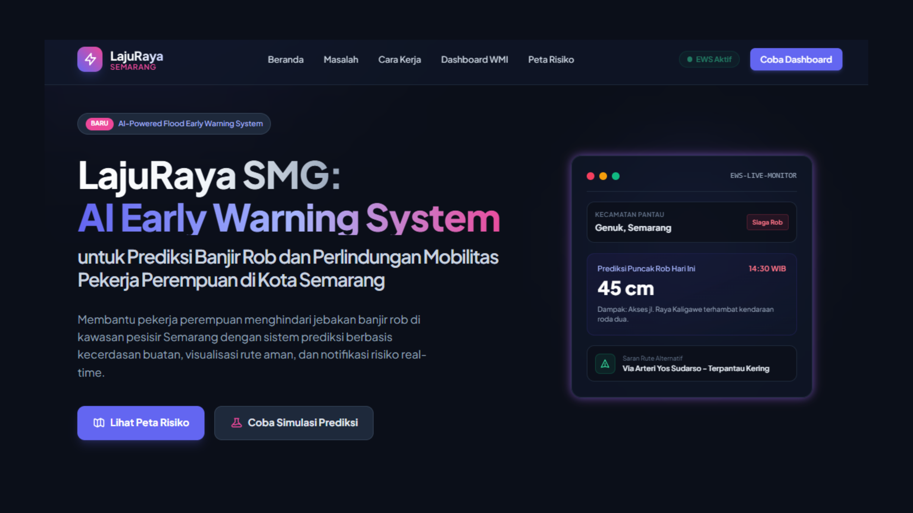

01 / Portofolio Teknis
Projek Web & Machine Learning

AI Early Warning System untuk prediksi banjir rob di Kota Semarang
LajuRaya SMG adalah platform yang dirancang untuk memprediksi banjir rob yang ada tiga area potensial (dekat dengan kawasan industri). Serta menghadirkan peringatan dini guna membantu mobilitas pekerja perempuan di Kota Semarang.
Python
Scikit-Learn
WhatsApp API

GarasiKu: AI-optimized Smart Parking Platform dengan fitur Live Crowd Status
GarasiKu adalah platform smart parking berbasis komunitas yang menghubungkan pencari parkir dengan pemilik lahan lokal secara real-time.
Gemini API
Python
SQL Database